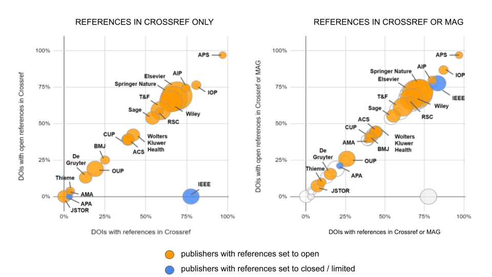

What is the issue here?
[Microsoft Academic Graph]...will be supported until the end of calendar year 2021, upon which time MAS will be retired
Good News and Bad News
-
Microsoft made the data available under an open (ODC-By) license which offers opportunities to develop new tools and resources, particularly based on machine learning approaches.
-
Much of the technology is open source and can be adapted or rebuilt to provide a replacement. Several groups are working on this.
-
Some aspects of what made MAG so useful were dependent on licenses to content that will be difficult or impossible to renegotiate. Some elements of the workflows are dependent on the Bing infrastructure.
-
A replacement will need to work smarter in some ways, especially if we want to reach beyond the core of the academic record (e.g. beyond DOIs)
-
Efforts to replace MAG largely focus on inferring or scraping metadata and are therefore dependent on access to semi-structured metadata or full text
-
Structured metadata resources are also moving forward in leaps and bounds. Increasing the upstream provision of structured metadata (i.e. by publishers) is a complementary strategy route towards a rich open metadata environment
Can we rebuild it? Yes...but...
...how would we know?
...and what content do we have
(or not) ?
A quick segue on the data
The Curtin Open Knowledge Initiative
@COKIProject - http://openknowledge.community
"Our goal is to change the stories that universities tell about themselves, placing open knowledge at the heart of that narrative"
The Data

Information
...but because we focus on provenance and transparency, it's also good for...
Comparing MAG with Crossref Metadata
Who has what, and what do we lose?
The Analysis
Data is derived from the following sources
- Crossref - weekly dump via Metadata Plus program
- Microsoft Academic - Affiliation and authorship data via biweekly dump
- GRID - Information on organisations via regular data dump
Data is integrated and processed via Observatory Platform, an open source workflow system developed within COKI to integrate data related to scholarly communications. The code is available on Github
For this analysis we largely use the "DOI Table" which is an aggregation of multiple data sources that provide information on the outputs identified by Crossref DOIs. To supplement this we use a de-normalised version of the MAG database.
Code for the analysis, including the queries and processing and a local copy of the derived data are available at the presentation Github repository.
The Analysis
-
Additional metadata for Crossref DOIs / metadata in MAG for non-DOIs
-
Metadata on:
- Affiliations
- Abstracts
- Citations
- (Open) References
- Subjects
Split by publication type, year of publication
All time and for Crossref "current" (2019-21)
This analysis uses data snapshots from 18 July 2021
MAG vs Crossref Coverage
Crossref records in MAG
Crossref records in MAG - by Crossref type
Crossref Records: MAG Added Value
Crossref Records: MAG Added Value (Current)
MAG Added Value by Crossref Type - Affiliations
MAG Added Value by Crossref Type - Abstracts
MAG Added Value by Crossref Type - Citations to
MAG Added Value by Crossref Type - Citations from
Case studies
References in Crossref - added value MAG (by publisher)
Coverage of affiliations by journal category
What is in MAG but not in Crossref?
MAG vs Crossref Coverage
Coverage of non-DOIs in MAG
Conclusions
Conclusions
-
MAG was a great resource, and its openness will enable us to build back better
-
There are challenges in systematically gaining access to underlying information to replicate some aspects of MAG (eg subject classifications)
-
Improvements to the provision of structured metadata by publishers (ROR, ORCID, I4OC, I4OA etc) have a great potential to improve metadata coverage
-
But gaps will still need to be filled (and back-filled). Access to content, including abstracts and ideally full-text is critical to make this happen beyond the low hanging fruit
-
There are big gaps and under-represented areas, including content beyond journal articles and smaller (and often non-APC open access) journals
To safeguard transparent data collection, provenance and sustainability ...
...we believe services seeking to replace MAG should demonstrate commitment to ...
... the Principles of Open Scholarly Infrastructure (POSI)
-
transparency
-
community governance
-
insurance plan for long-term availability
transparency
community governance
insurance plan for long-term availability
Colophon
- Code, data and slides on Github: https://github.com/Curtin-Open-Knowledge-Initiative/what_do_we_lose_mag
- Presentation (webversion): https://curtin-open-knowledge-initiative.github.io/what_do_we_lose_mag/sti2021.html
- PDF slides generated with: https://github.com/astefanutti/decktape

Copyright Cameron Neylon and Bianca Kramer 2021. This slide deck is licensed under a
Creative Commons Attribution 4.0 International License.
Code is available under an Apache v2.0 license at Github.